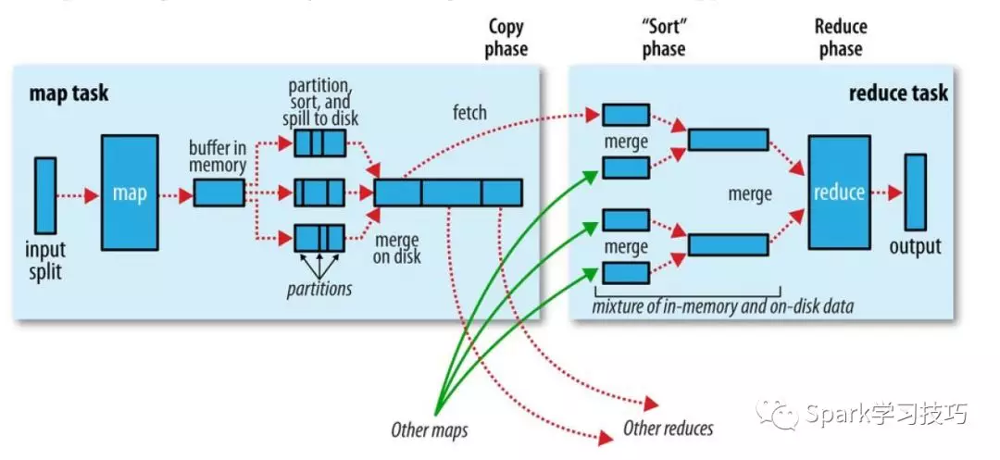

MapReduce介绍
Hadoop Map/Reduce是一个使用简易的软件框架，基于它写出来的应用程序能够运行在由上千个商用机器组成的大型集群上，并以一种可靠容错的方式并行处理上T级别的数据集。
一个Map/Reduce 作业（job） 通常会把输入的数据集切分为若干独立的数据块，由 map任务（task）以完全并行的方式处理它们。框架会对map的输出先进行排序， 然后把结果输入给reduce任务。通常作业的输入和输出都会被存储在文件系统中。 整个框架负责任务的调度和监控，以及重新执行已经失败的任务。
MapReduce工作机制
可以在 Job 对象上面调用 submit() 方法或者 waitForCompletion() 方法来运行一个 MapReduce 作业。
一个MapReduce运行过程如下：

作业运行中涉及到5个实体：
- 客户端，提交MapReduce作业
- YARN资源管理器（resource manager），负责协调集群上计算i机资源的分配
- YARN节点管理器（node manager），负责启动和监视集群中机器上的计算容器（container）
- MapReduce的application master，负责协调运行MapReduce作业的任务。它和MapReduce任务在容器中运行
- 分布式文件系统
作业提交
在 Job 对象上面调用 submit() 方法，在内部创建一个 JobSubmitter 实例，然后调用该实例的 submitJobInternal() 方法（上图步骤1）。如果使用waitForCompletion() 方法来进行提交作业，该方法每隔 1 秒轮询作业的进度，如果进度有所变化，将该进度报告给控制台（console）。
JobSubmitter 所实现作业提交过程如下：
- 向资源管理器申请一个新应用ID （上图步骤二）
- 检查作业的输出说明。例如，如果没有指定输出目录或输出目录已经存在，作业不提交
- 计算作业的输入分片。如果分片无法计算，比如输入路径不存在作业不提交
- 将运行作业所需要的资源（包括作业JAR文件，配置文件等）复制到共享文件系统中一个以作业ID命名的目录下（上图步骤三）
- 调用资源管理器的submitApplication()提交作业（上图步骤四）
作业初始化
当资源管理器接受到 submitApplication() 方法的调用，它把请求递交给 YARN 调度器（scheduler）。调度器分配了一个容器（container），资源管理器在该容器中启动 application master 进程，该进程被节点管理器管理（上图步骤5a 和 5b）。
- application master通过创建多个薄记对象完成对作业的初始化，用以保持对作业进度的跟踪。（上图步骤6）
- 然后，application master将从共享文件系统的中获取客户端计算的输入分片。（上图步骤7）
- 再对每一个分片创建一个map任务对象。任务ID也在此时分配。
- 最后，application master在任务运行之前，设置输出目录以及任务输出的临时工作空间
任务分配
application master需要判断如何运行构成MapReduce作业的各个任务。如果作业很小，就选择和自己在同一个JVM上运行任务。否则应该为该作业的所有map任务和reduce任务向资源管理器请求容器（上图步骤8），首先Map任务发出请求，直到有5%的map任务已经完成时，reduce任务的请求才会发出。
reduce任务能够在集群任意位置运行，但是map任务有着数据本地化局限：
- 理想情况下，任务的数据本地化，意味着任务在分片驻留的同一节点运行
- 任务可能是机架本地化，分片在同一机架而非同一节点上运行
- 还有可能是别的机架h获取所需数据
任务执行
一旦资源调度器在一个特定的节点上为一个任务分配一个容器所需的资源，application master 通过连接节点管理器来启动这个容器(上图步骤9a 和9b)。任务通过一个主类为 YarnChild 的 Java 应用程序来执行。在它运行任务之前，它会将任务所需的资源本地化，包括作业配置，JAR 文件以及一些在分布式缓存中的文件(上图步骤10)。最后，它运行 map 或者 reduce 任务(上图步骤11)。
YarnChild 在一个指定的 JVM 中运行，所以任何用户自定义的 map 和 reduce 函数的 bugs（或者甚至在 YarnChild）都不会影响到节点管理器。
进度和状态更新
MapReduce 作业是长时间运行的批处理作业（long-running batch jobs），运行时间从几十秒到几小时。由于可能运行时间很长，所以用户得到该作业的处理进度反馈是很重要的。
作业和任务都含有一个状态，包括运行状态、maps 和 reduces 的处理进度，作业计数器的值，以及一个状态消息或描述（可能在用户代码中设置）。这些状态会在作业的过程中改变。
当一个任务运行，它会保持进度的跟踪（就是任务完成的比例）。对于 map 任务，就是被处理的输入的比例。对于 reduce 任务，稍微复杂一点，但是系统任然能够估算已处理的 reduce 输入的比例。通过把整个过程分为三个部分，对应于 shuffle 的三个阶段。例如，如果一个任务运行 reducer 完成了一半的输入，该任务的进度就是 5/6，因为它已经完成了 copy 和 sort 阶段（1/3 each）以及 reduce 阶段完成了一半（1/6）。
MapReduce 的进度组成
进度不总是可测的，但是它告诉 Hadoop 一个任务在做的一些事情。例如，任务的写输出记录是有进度的，即使不能用总进度的百分比来表示进度报告非常重要（因为它自己也可能不知道到底有多少输出要写，也可能不知道需要写的总量）。如下的操作构成了进度：
- 读取输入记录（在 mapper 或者 reducer 中）。
- 写输出记录（在 mapper 或者 reducer 中）。
- 设置状态描述（由 Reporter 的或 TaskAttempContext 的 setStatus() 方法设置）。
- 计数器的增长（使用 Reporter 的 incrCounter() 方法 或者 Counter 的 increment() 方法）。
- 调用 Reporter 的或者 TaskAttemptContext 的 progress() 方法。
任务有一些计数器，它们在任务运行时记录各种事件，这些计数器要么是框架内置的，例如：已写入的map输出记录数，要么是用户自定义的。
当 map 或 reduce 任务运行时，子进程使用 umbilical 接口和父 application master 进行通信。任务每隔三秒钟通过 umbilical 接口报告其进度和状态（包括计数器）给 application master，application master会形成一个作业的聚合视图。
在作业执行的过程中，客户端每秒通过轮询 application master 获取最新的状态（间隔通过 mapreduce.client.progressmonitor.polinterval 设置）。客户端也可使用 Job 的 getStatus() 方法获取一个包含作业所有状态信息的 JobStatus 实例，过程如下：

作业完成
当 application master 接受到最后一个任务完成的通知，它改变该作业的状态为 “successful”。当 Job 对象轮询状态，它知道作业已经成功完成，所以它打印一条消息告诉用户以及从 waitForCompletion() 方法返回。此时，作业的统计信息和计数器被打印到控制台。
Application master 也可以发送一条 HTTP 作业通知，如果配置了的话。当客户端想要接受回调时，可以通过 mapreduce.job.end-notification.url 属性进行配置。
最后，当作业完成，application master 和作业容器清理他们的工作状态（所以中间输入会被删除），然后 OutputCommiter 的 commitJob() 方法被调用。作业的信息被作业历史服务器存档，以便日后用户查询。
MapReduce计算过程
MapReduce通常由三个操作组成
- map操作：map操作是一类将输入记录集转换为中间格式记录集的独立任务，其应用于本地数据。
- shuffle操作：工作节点根据输出键（由 map 函数生成）重新分配数据，对数据映射排序、分组、拷贝，目的是属于一个键的所有数据都位于同一个工作节点上。
- reduce操作：Reduce操作将与一个key关联的一组中间数值集归约（reduce）为一个更小的数值集。

其中map阶段与reduce阶段之间的关系如下，而shuffle阶段就是将map输出的键相同的值汇聚在一起以供reduce处理

整个计算过程：输入分片 —> map阶段 —> shuffle阶段 —> reduce阶段
输入分片
在进行map计算之前，mapreduce会根据输入文件计算输入分片（input split），每个输入分片（input split）针对一个map任务，输入分片（input split）存储的并非数据本身，而是一个分片长度和一个记录数据的位置的数组。
对于不可分的文件，一个文件一个分片。
对于可分的文件会被分成不大于块大小的分片，例如文件大小为140M，会被分为128M+12M两个分片；文件大小为100M，则为100M大小的分片。因此，如果可以在运行MapReduce程序之前合并一些小文件对优化作业有很大帮助。
为什么默认分片大小和块大小相同？
If the split spanned two blocks, it would be unlikely that any HDFS node stored both blocks即
如果分片跨越了两个数据块，那么不太可能所有的 HDFS 节点都存储了分片中的两个数据块，（也就是意味着总会存在网络传输的情况）Map阶段
Map在输入的数据中获取一个键值对，然后返回一个键值对的列表：
Map(k1,v1) -> list(k2,v2)Map函数会被并行调用，应用于输入数据集中的每个键值对（keyed by K1），然后每个调用返回一个键值对（keyed by K2）列表。
以计算词频为例，Map阶段如下
/**
* 继承的Mapper类中
* 第一个参数：LongWritable是输入的键，此处表示一行的起始偏移量
* 第二个参数：Text是输入的值，此处表示一行的文本内容
* 第三个参数：Text是输出的键，此处表示每一个单词
* 第四个参数：IntWritable是输出的值，此处表示每个单词的数量都是1(不管重复不重复)
*/
public class WordCountMapper extends Mapper<LongWritable, Text, Text, IntWritable>{
/*
* map方法是提供给map task进程来调用的，map task进程是每读取一行文本来调用一次自定义的map方法
* map task在调用map方法时，传递的参数：
* 一行的起始偏移量LongWritable作为key
* 一行的文本内容Text作为value
*/
@Override
protected void map(LongWritable key, Text value,Context context) throws IOException, InterruptedException {
//拿到一行文本内容，转换成String 类型
String line = value.toString();
//将这行文本切分成单词
String[] words=line.split(" ");
//输出<单词，1>
for(String word:words){
context.write(new Text(word), new IntWritable(1));
}
}
}Shuffle阶段
shuffle阶段是承接map和reduce，其也可以分为map shuffle和reduce shuffle
map shuffle
在Map端的shuffle过程是对Map的结果进行分区、排序、分割，然后将属于同一分区的输出合并在一起并写在磁盘上，最终得到一个分区有序的文件，分区有序的含义是map输出的键值对按分区进行排列，具有相同partition值的键值对存储在一起，每个分区里面的键值对又按key值进行升序排列（默认），其流程大致如下：

写缓存区
每个map任务都是有一个环形缓冲区的用于存储任务的输出。在默认情况下，缓冲区的大小为100MB，其值可以通过改变io.sort.mb来调整。一旦缓冲内容达到阈值(io.sort,spill,percent，默认是0.8)，一个后台线程会将内容spill到磁盘。在spill到磁盘的过程中，map输出并不会停止往缓冲区写入数据，但如果在此期间缓冲区被写满，map会被阻塞知道写磁盘过程完成。溢出写过程安装轮询方式将缓冲区的内容写到mapred.local.dir指定的作业特定子目录中的目录中。
分区，排序，合并
写磁盘之前，线程首先根据数据最终要传的reducer把数据划分成相应的分区。在每个分区中，后台线程按键在内存中排序，如果有一个combiner，它就在排序后的输出上运行。运行combinner使得map输出结果更紧凑，因此可以减少写到磁盘的数据和传递给reducer的数据。
写文件
每次内存缓冲区达到溢出阈值，就会新建一个溢出文件(spill file)，因此在map任务写完其最后一个输出记录之后，会有几个溢写文件。在任务完成之前，溢出文件被合并成一个已分区且已排序的输出文件。配置属性io.sort.factor控制着一次最多能合并多少流，默认是10。
如果至少存在3个溢出文件(通过min.num.spills.for.combine属性设置)时，则combiner就会在输出文件写到磁盘之前再次运行。combiner可以在输入上反复运行，单不影响最终的结果。如果只有一两个溢出文件，那么对map输出的减少不值得调用combiner，就不会为map输出再次运行combiner。
压缩
在将压缩map输出写到磁盘的过程中对它进行压缩往往是个好主意，因为这样就会写磁盘的速度更快，更加节约时间，并且减少传给reducer的数据量。在默认情况下，输出是不压缩的，但是只要将mapred.compress.map.output设置为true，就可以启用这个功能。使用的压缩库由mapred.map.output.compression.codec指定。
Reducer是通过HTTP的方式得到输出文件的分区。
reduce shuffle
集群中往往一个mr任务会有若干map任务和reduce任务，map任务运行有快有慢，reduce不可能等到所有的map任务都运行结束再启动，因此只要有一个任务完成，reduce任务就开始复制其输出。复制线程的数量由mapred.reduce.parallel.copies属性来改变，默认是 5。
Reducer如何知道map输出的呢？
map任务完成之后，它们会使用心跳机制通知它们的application master。因此，对于指定作业，application master知道map输出和主机位置的映射关系。reducer中一个线程定期询问master以便获得map输出主机的位置，知道获得所有的输出。
复制
Reduce对map输出的不同大小也有相应的调优处理。如果map输出相当小，会被复制到reduce任务JVM的内存(缓冲区大小由mapred.job.shuffle.input.buffer.percent属性控制，指定用于此用途的堆空间的百分比)，否则，map输出会被复制到磁盘。一旦内存缓冲区达到阈值(由mapred.job.shuffle.merge.percent决定)或达到map的输出阈值(mapred.inmem.merge,threshold控制)，则合并后溢出写到磁盘中。如果指定combiner，则在合并期间运行它已降低写入磁盘的数据量。
随着磁盘上副本的增多，后台线程会将它们合并为更大的，排序好的文件。这会为后面的合并节省一些时间。注意，为了合并，压缩的map输出(通过map任务)都必须在内存中解压缩。
合并排序
复制完所有的map输出后，reduce任务进入排序阶段(更加恰当的说法是合并阶段，因为排序是在map端进行的)，这个阶段将合并map的输出，维持其顺序排序。这是循环进行的。比如，有50个map输出，而合并因子是10(默认值是10，由io.sort.factor属性设置，与map的合并类似)，合并将进行5趟。每趟将10个文件合并成一个文件，因此最后有5个中间文件。
在最后阶段，即reduce阶段，直接把数据输入reduce函数，从而省略了一次磁盘往返行程，并没有将这5个文件合并成一个已排序的文件最为最后一趟。最后的合并可以来自内存和磁盘片段。
每趟合并的文件数实际上比上面例子中展示的有所不同的。目标是合并最小数据量的文件以便满足最后一趟的合并系数。因此，如果有40个文件，我们不会再四趟中每趟合并10个文件而得到4个文件。相反，第一趟只合并4个文件，随后的三塘合并10个文件。最后一趟中，4个已经合并的文件和剩余的6个文件合计是个文件进行合并。如下图所述：
注意这并没有改变合并的次数，它只是一个优化措施，目的是尽量减少写到磁盘的数据量，因为最后一趟总是直接合并到reduce。

Reduce阶段
Reduce 是对一个列表的元素进行适当的合并，将map阶段的键值对处理成我们想要的结果
Reduce(k2, list (v2)) -> list(v3)以计算词频为例，Reduce阶段如下
/**
* 继承的Reducer类中
* 第一个参数：Text是输入的键,和Map阶段的输出键一样，此处表示每个单词
* 第二个参数：IntWritable是输入的值，和Map阶段的输出值一样，此处表示每个单词的数量是1
* 第三个参数：Text是输出的键，此处表示不重复的单词
* 第四个参数：IntWritable是输出的值，此处表示每个单词的数量（不重复）
*/
public class WordCountReducer extends Reducer<Text, IntWritable, Text, IntWritable>{
@Override
/*
* reduce方法提供给reduce task进程来调用
*
* reduce task会将shuffle阶段分发过来的大量kv数据对进行聚合，聚合的机制是相同key的kv对聚合为一组
* 然后reduce task对每一组聚合kv调用一次我们自定义的reduce方法
* 比如：<hello,1><hello,1><hello,1><tom,1><tom,1><tom,1>
* hello组会调用一次reduce方法进行处理，tom组也会调用一次reduce方法进行处理
* 调用时传递的参数：
* key：一组kv中的key
* values：一组kv中所有value的迭代器
*/
protected void reduce(Text key, Iterable<IntWritable> values,Context context) throws IOException, InterruptedException {
//定义一个计数器
int count = 0;
//通过value这个迭代器，遍历这一组kv中所有的value，进行累加
for(IntWritable value:values){
count+=value.get();
}
//输出这个单词的统计结果
context.write(key, new IntWritable(count));
}
}参考
https://juejin.im/post/5bb59f87f265da0aeb7118f2
https://hadoop.apache.org/docs/r1.0.4/cn/mapred_tutorial.html